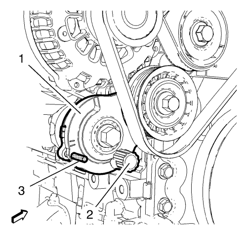
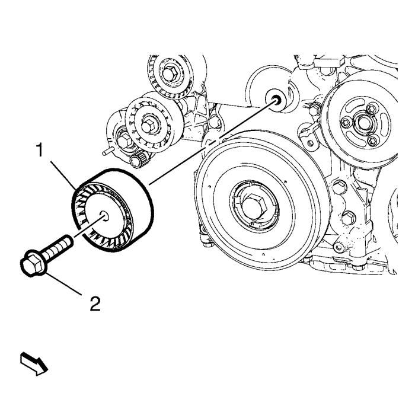

Sustitución de la polea loca de la correa de distribución - Parte inferior
Herramientas especiales
EN-48952 Pasador de fijación
Si desea informarse sobre herramientas regionales equivalentes, consultar Herramientas especiales .
Procedimiento de desmontaje
- Elevar el vehículo y soportarlo de manera segura. Consultar Elevación y soporte en alto del vehículo .
- Desmonte el aislante del compartimento delantero. Consultar Sustitución del aislamiento del compartimento delantero .
- Retire la parte delantera del revestimiento del panel del paso de rueda delantero derecho. Consultar Sustitución del revestimiento del panel del paso de rueda delantero .
- Retire la cubierta de la polea y la correa de accionamiento. Consultar Desmontaje de la cubierta de la polea y la correa de accionamiento .

- Aplique tensión al dispositivo tensor de la correa de accionamiento (1) con una llave adecuada sobre la herramienta de retención (2) girándola hacia la izquierda.
- Monte el pasador de fijación EN-48952 (3).
- Retire la correa de accionamiento del dispositivo tensor de la correa de accionamiento.

- Retire el tornillo de la polea loca de la correa de accionamiento inferior (2).
- Retire la polea loca de la correa de accionamiento inferior (1).
Procedimiento de montaje
- Monte la polea loca de la correa de accionamiento inferior (1).
Precaución:Consulte Precaución con las fijaciones en la sección Prólogo.
- Monte el tornillo de la polea loca de la correa de accionamiento inferior (2) y apriételo a 58 N·m (43 lib. pie).
- Monte la correa de accionamiento en el dispositivo tensor de la correa de accionamiento.
- Aplique tensión al dispositivo tensor de la correa de accionamiento (1) con una llave adecuada sobre la herramienta de retención (2) girándola hacia la izquierda.
- Retire el pasador de fijación EN-48952 (3).
- Suelte la tensión del dispositivo tensor de la correa de accionamiento (1) y deje que el dispositivo tensor se deslice hacia atrás lentamente.
- Compruebe que la correa de accionamiento se asienta correctamente.
- Monte la cubierta de la polea y la correa de accionamiento. Consultar Montaje de la cubierta de la polea y la correa de accionamiento .
- Monte la parte delantera del revestimiento del panel del paso de rueda delantero derecho. Consultar Sustitución del revestimiento del panel del paso de rueda delantero .
- Monte el aislante del compartimento delantero. Consultar Sustitución del aislamiento del compartimento delantero .
- Bajar el vehículo.
| © Copyright Chevrolet. All rights reserved |